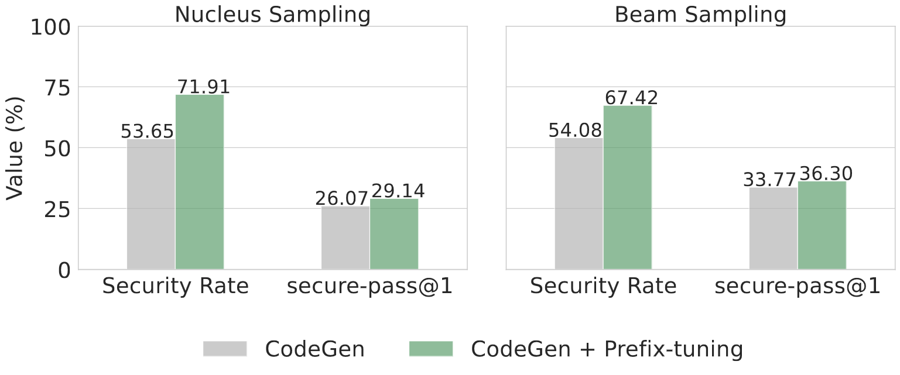
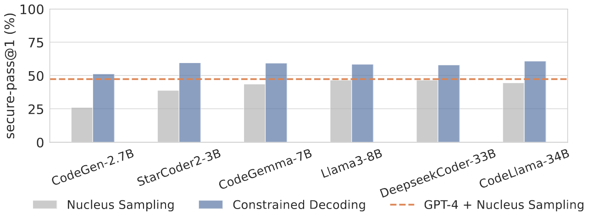

There is a disconnection between benchmarks for Code LLMs that evaluate the security and those that assess correctness. Existing benchmarks, like HumanEval and MBPP only evaluate the correctness, while others like Copilot dataset and SecurityEval only target on the security. To bridge this gap, we present CodeGuard+, along with two new metrics, to measure Code LLMs' ability to generate both secure and correct code. Currently, CodeGuard+ supports Python and C/C++, with 103 prompts covering 42 CWEs.
Code Large Language Models (Code LLMs) have been increasingly used by developers to boost productivity, but they often generate vulnerable code. Thus, there is an urgent need to ensure that code generated by Code LLMs is correct and secure. Previous research has primarily focused on generating secure code, overlooking the fact that secure code also needs to be correct. This oversight can lead to a false sense of security. Currently, the community lacks a method to measure actual progress in this area, and we need solutions that address both security and correctness of code generation.
This paper introduces a new benchmark, CodeGuard+, along with two new metrics, to measure Code LLMs' ability to generate both secure and correct code. Using our new evaluation methods, we show that the state-of-the-art defense technique, prefix tuning, may not be as strong as previously believed, since it generates secure code but sacrifices functional correctness. We also demonstrate that different decoding methods significantly affect the security of Code LLMs.
Furthermore, we explore a new defense direction: constrained decoding for secure code generation. We propose new constrained decoding techniques to generate secure code. Our results reveal that constrained decoding is more effective than prefix tuning to improve the security of Code LLMs, without requiring a specialized training dataset. Moreover, our evaluations over eight state-of-the-art Code LLMs show that constrained decoding has strong performance to improve the security of Code LLMs, and our technique outperforms GPT-4.
Previous works calculate the security rate as the percentage of secure programs within unique generated programs that can be parsed and compiled. This does not measure correctness and forgives generated code that is functionally wrong. This is disconnected from the standard pass@\(k\) metric widely used in the literature for comparing performance of Code LLMs, which defines the expected likelihood of generating any correct code output within \(k\) code outputs. Thus, we propose two new evaluation metrics: secure@\(k_{\text{pass}}\) and secure-pass@\(k\). When \(k = 1\), secure@\(1_{\text{pass}}\) measures the likelihood of any generated correct code being secure; secure-pass@1 measures the expected likelihood of generating both secure and semantically correct code given a single generation.
In the above figure, we compare CodeGen + Prefix-tuning model, trained with the SOTA defense SVEN, against the baseline CodeGen model. Our metric secure-pass@1 is more realistic than SVEN Security Rate. Since we evaluate both security and correctness of generated code, while SVEN Security Rate does not evaluate correctness. SVEN Security Rate severely overestimates how secure a model really is. The secure-pass@1 of CodeGen + Prefix-tuning is only 2.53% better than CodeGen with Beam Sampling.
We explore a new defense direction of constrained decoding for secure code generation. Given a set of constraints, constrained decoding needs to generate code that satisfies all the constraints. In our paper, we specify security constraints for code generated by prompts in CodeGuard+. To specify the security constraints, we use knowledge about common secure coding practices and the corresponding CWE type that might be triggered by the prompt. For example, to avoid out-of-bound write, we need the generated code to do the array index bound check; to process untrusted user input, the generated code should perform input validation.
In the above figure, we use CodeGuard+ to evaluate our constrained decoding technique on different Code LLMs. Our constrained decoding technique can improve secure-pass@1 of all six open-source Code LLMs of sizes ranging from 2.7B to 34B. Every model with constrained decoding shows better secure-pass@1 than GPT-4 with Nucleus Sampling.
@article{fu2024constrained,
title={Constrained Decoding for Secure Code Generation},
author={Yanjun Fu and Ethan Baker and Yu Ding and Yizheng Chen},
journal={arXiv preprint arXiv:2405.00218},
year={2024}
}